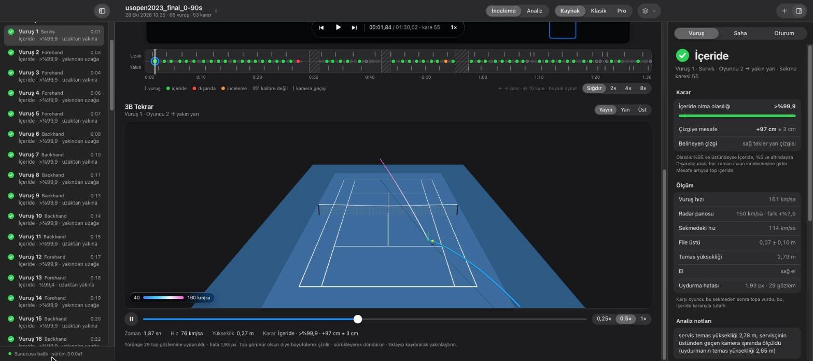
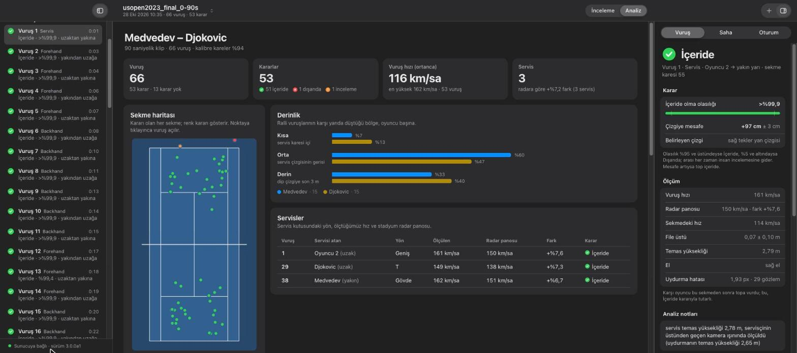

İçeride mi?
DIŞARIDA
uzak dip çizginin 129 cm gerisinde · ± 17 cm · tek yayın kamerası



01 / 07
Kortu tanır
14anahtar nokta, her karede
çizgilere piksel altı oturtma
kameranın konumu ve odağı çıkarılır
02 / 07
Topu izler, sekmeyi ölçer
top her karede bulunur
3B uçuşyerçekimi, hava direnci ve spinle kurulur
sekme anı ve yeri uçuştan çıkar
03 / 07
Kararı kendi verir
İçerideolasılık >%99,9
+0 cmyan çizgiye mesafe · ± 4 cm
0 km/saservis · stadyum radarı 151
04 / 07
Emin değilse gerekçesini söyler
%17geometriye göre içeride · çizgiden 13 cm, ± 14 cm
ama karşı oyuncu topa vurdu, oyun sürdü
İçeridedüşük güven olarak işaretlenir
05 / 07
Maçı yayından okur
Medvedev – Djokovicoyuncu adları
6–3 · 5–5 · 40–30set, oyun ve sayı
servis sırası ve stadyum radarı, cihaz üstü metin okumayla
06 / 07
Başka maç, aynı sistem
Sinner – Alcaraz2025 US Open finali
İçerideservis çizgisine +93 cm · ± 7 cm
maça özel ayar yok
07 / 07
Tekrar ve analiz
3B tekraruçuş yeniden kurulur, renk hızı gösterir
66 vuruş · 53 karartek maç kesitinden
forehand · backhand · servis yönü ve derinlik